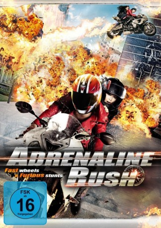

gesehen am 19.09.2015
gesehen am 19.09.2015Alternativ: Quick (Englischer Titel) gesehen am 19.09.2015
 
 IMDB-Wertung: 5.9 / 10
IMDB-Wertung: 5.9 / 10  Metascore:
Metascore: 
Der Geschwindigkeitssüchtige Motorradkurier, Ki Soo, ist der Alptraum jedes Verkehrspolizisten. Nichts kann Ki Soo aufhalten, wenn er erst mal auf seiner Maschine sitzt, bis seine letzte Lieferung eine gewaltige Explosion in einem Gebäude verursacht. Ein mysteriöser Anrufer teilt Ki Soo mit, dass eine weitere Bombe in seinem Helm versteckt ist - diesen jedoch trägt Ki Soo's Freundin, Ah Rom. Um Ah Rom zu retten, muss Ki Soo weiterhin seine explosiven Pakete in einer bestimmten Zeit ausliefern. Ein Wettlauf gegen die Zeit beginnt, wobei Ki Soo eine Spur der Verwüstung hinterlässt ...
Jahr: 2011
Dauer: 115 Minuten
FSK: 16
Land: Süd-Korea Studio: Los Banditos FilmsTonspuren:
Untertitel:
Auflösung: 1080p (1920x816) Größe: 5171 MB
Genre: Action, Thriller, Komödie
Regisseur: Beom-gu Cho
Drehbuch: Su-jin Park, JK Youn, Beom-gu Cho
Soundtrack: Dalpalan
Darsteller:
 Dong-seok Ma als Kim Joo-cheol
Dong-seok Ma als Kim Joo-cheolDatei: X:\HD-Eastern-Modern(A-M)\Adrenaline Rush (2011, FSK16, 1920x816).mkv seit 14.09.2015
Festplatte: HD Eastern+Western
 Es gibt insgesamt 104 Filme in der Gruppe 'HD-Eastern-Modern(A-M)'
Es gibt insgesamt 104 Filme in der Gruppe 'HD-Eastern-Modern(A-M)'